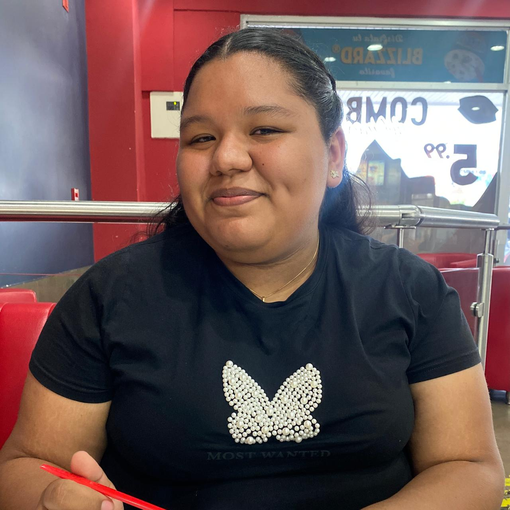

Yisuari Rodríguez
Programación II · Licenciatura en Ciberseguridad · Universidad Tecnológica de Panamá
Trabajos
Investigación 1
Aprendimos sobre Python, su historia, características y principales aplicaciones. Además, estudiamos las estructuras de datos básicas del lenguaje, como las tuplas, listas, conjuntos y diccionarios.
Taller práctico
Desarrollamos un programa con una interfaz gráfica utilizando Tkinter. La aplicación contaba con un menú que permitía elegir entre dos opciones: una donde un profesor podía gestionar las calificaciones de sus estudiantes y otra destinada al proceso de inscripción de estudiantes.
Ejercicio Práctico 1
Desarrollamos una aplicación web con Flask llamada "Sucesos y Más", la cual consistía en una página de noticias donde se publicaban noticias, servicios y contenido de interés. Además, elaboramos un diagrama de red y realizamos su simulación utilizando Cisco Packet Tracer.
Ejercicio Práctico 2
Creamos una aplicación web con Flask para una empresa llamada "Chiriquí Eats", la cual ofrecía un servicio para que diferentes restaurantes pudieran publicar y gestionar sus productos. Como parte del proyecto, también diseñamos el diagrama de red en Cisco Packet Tracer y realizamos una simulación enfocada en la mitigación de ataques de denegación de servicio (DoS).
Exámenes parciales
Examen Parcial 1
Esta actividad consistió en desarrollar una aplicación web con Flask para una universidad que necesitaba gestionar y controlar a su personal de aseo. Además, realizamos una simulación de red en Cisco Packet Tracer y configuramos un servidor de base de datos en una máquina virtual.
Examen Parcial 2
En esta actividad desarrollamos una aplicación web con Flask para una empresa llamada "Chinos Café", la cual permitía gestionar las órdenes de pizza de sus clientes. Asimismo, diseñamos un diagrama de red y realizamos una práctica de ciberseguridad enfocada en la mitigación de ataques de fuerza bruta mediante los servicios SSH y FTP.

Sobre mí
Hola, mi nombre es Yisuari Rodríguez. Tengo 20 años y soy estudiante de segundo año de la Licenciatura en Ciberseguridad en la Universidad Tecnológica de Panamá. Me gusta leer, escuchar música, compartir tiempo con mis amigos y explorar nuevas tecnologías.
Habilidades
- Programación en Java
- Programación en Python
- Flask
- Cisco Packet Tracer
- Bases de datos
- Ciberseguridad
- Resolución de problemas
- Trabajo en equipo
Cursos

Instalación y Configuración de Redes